CMCC Fujian · Multi-Agent Power Outage Response Simulation
CMCC Fujian pioneers the application of A2A-T in cross-domain fault handling scenarios. With registration of fault agent, RAN agent, Transmission agent, and power agent with skills, the registry center by OpenAN provides the best-fit model based on semantic demand. To simulate a real case, CMCC Fujian starts a mock testing on power outage of a district in Fujian.
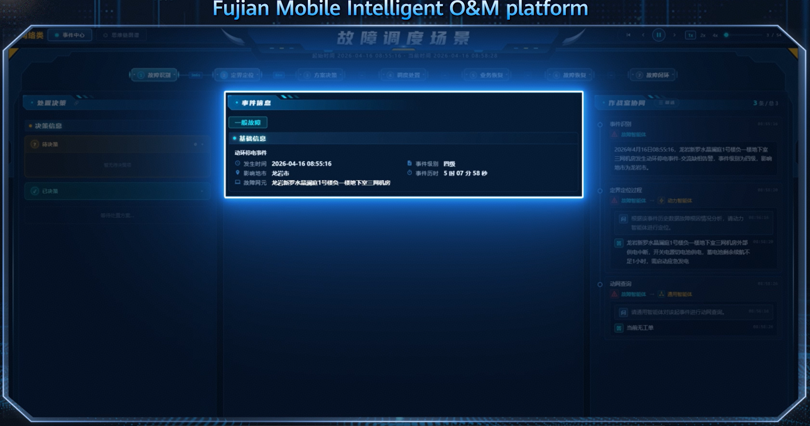
Fault agent uses A2A-T to invoke RAN agent, transmission agent, and power agent to locate faults.
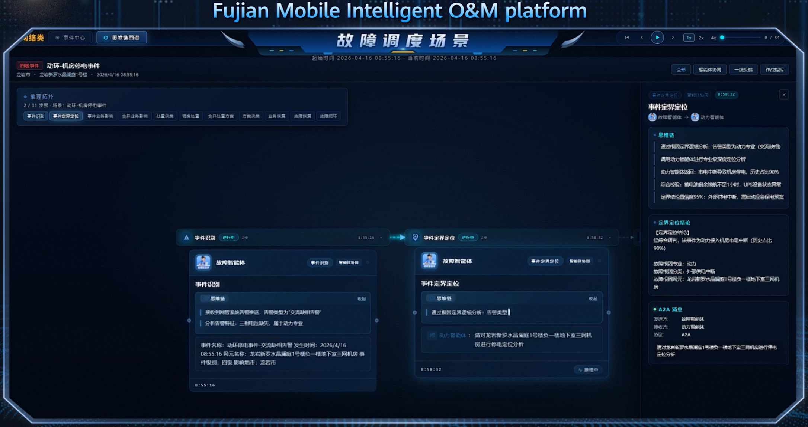
At the same time, it invokes the general agent to check whether there are engineering operations.
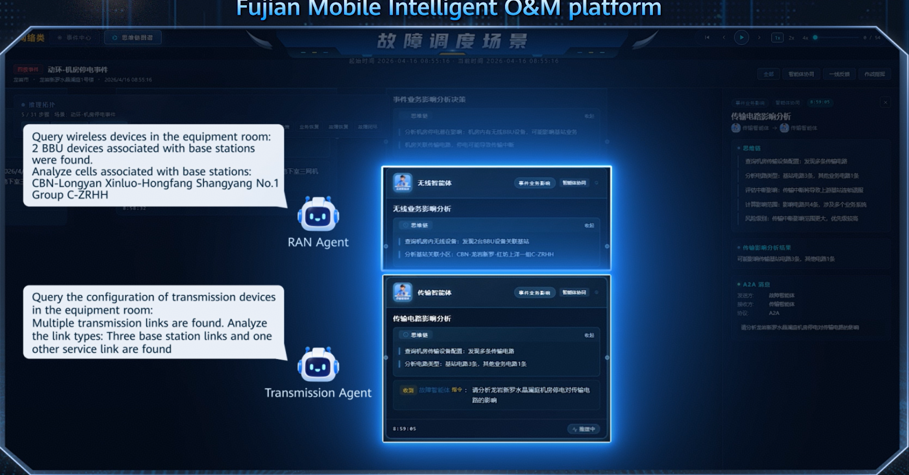
Task-T is defined. The Fault agent collaborates with RAN agent, transmission agent, and power agent to locate faults. Based on the Task-T semantic slot, the fault scenario is instantly and deterministically identified.
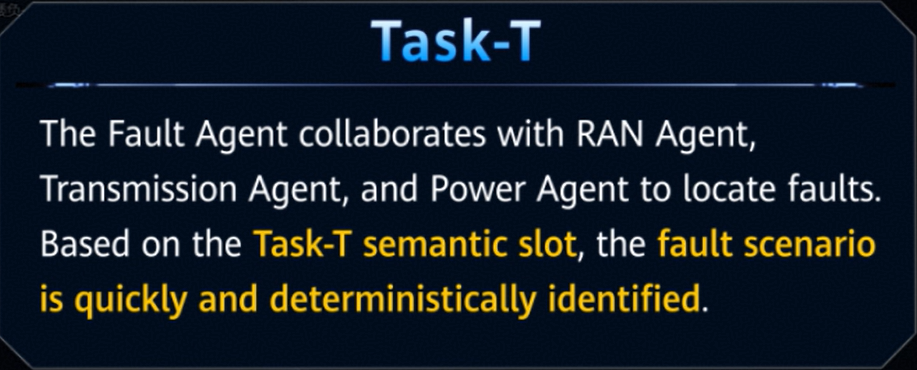
Root cause found.
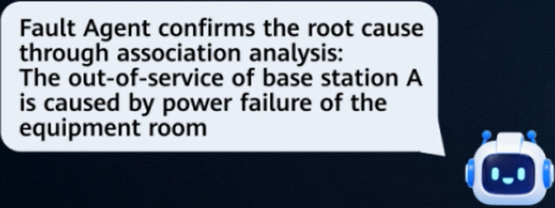
Start negotiation-T.
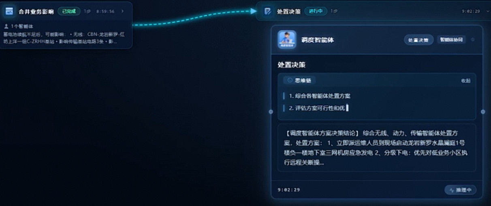
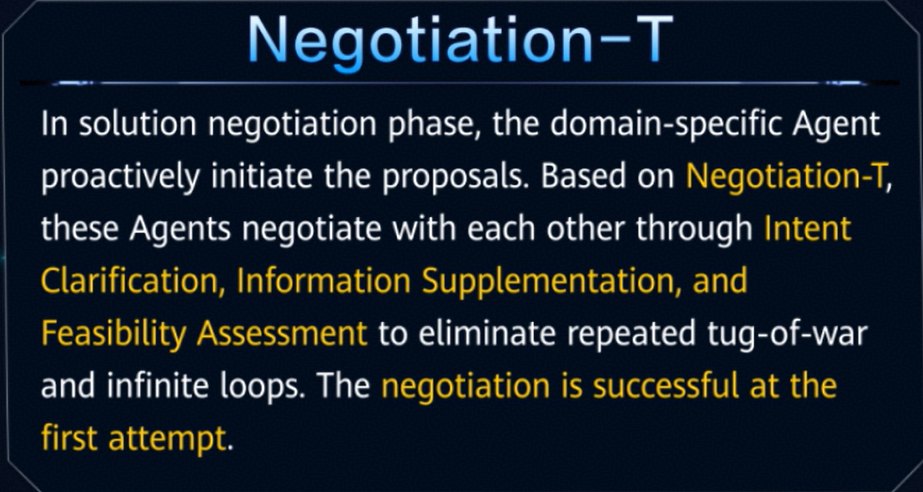
Procedure starts.
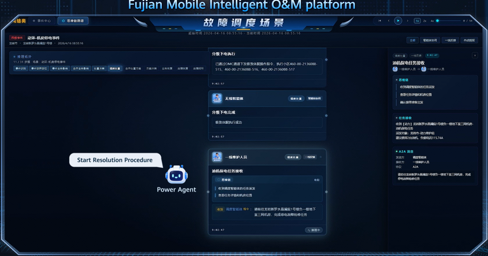
Power agent immediately notifies the maintenance engineer to start the emergency generator to restore power supply.
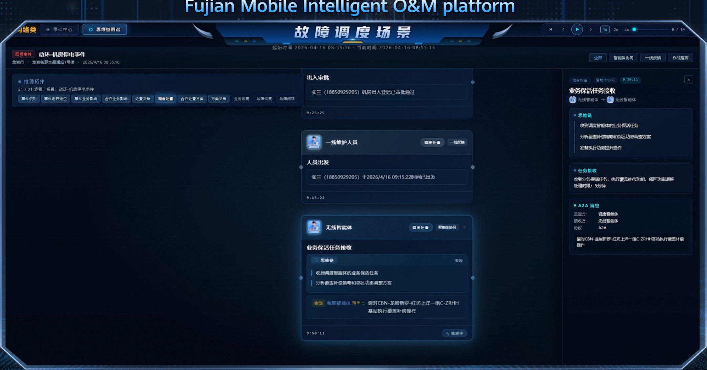
RAN agent adjusts the power of neighboring cells to compensate for the fault area, ensuring quick service recovery.
Authorization-T created.
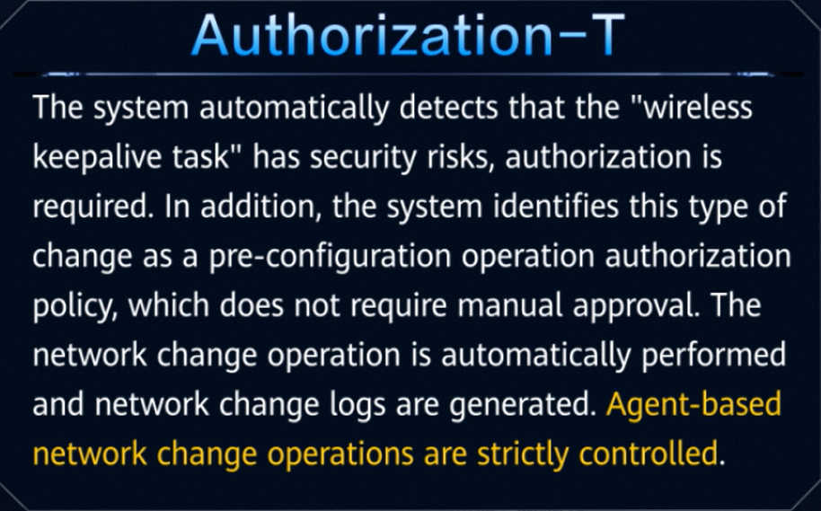
The surrounding base stations enable coverage compensation for the faulty base station A to maintain service continuity.
The maintenance engineer receives the power outage repair task synchronously from power agent through the intelligent assistant.
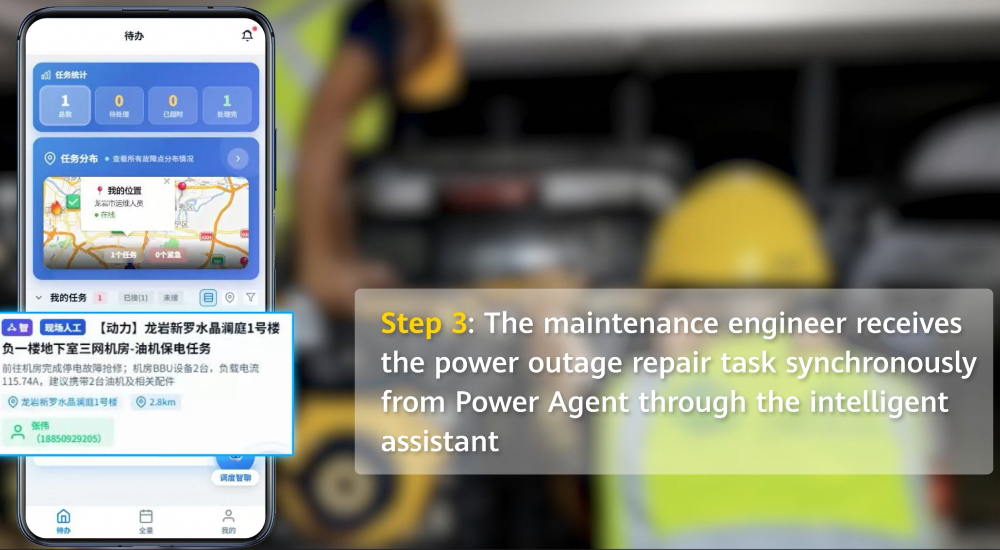
The alarm is cleared and power supply to the equipment room is restored. Maintenance engineers close work orders through the intelligent assistant. Adjacent station compensation cancelled.
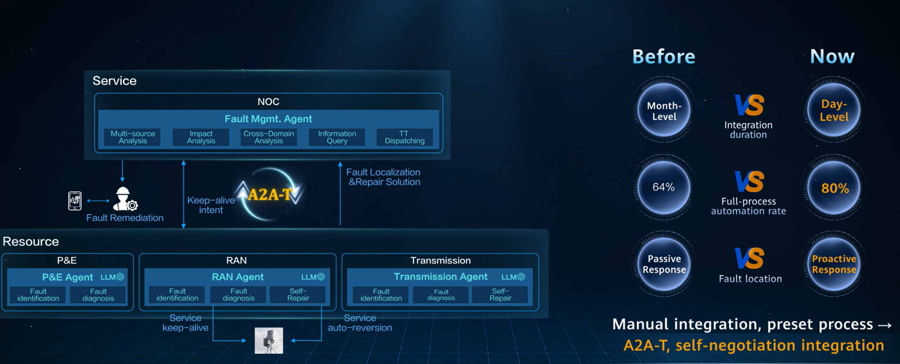
This demonstration fully showcases how A2A-T enables rapid fault demarcation and localization for MBB network ultra-fast service recovery, and seamless service assurance, achieving integrated intelligent O&M capabilities through multi-agent collaboration.